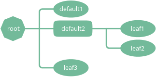
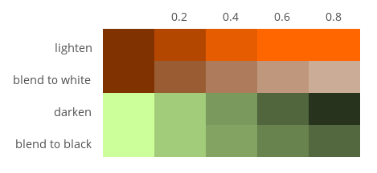

Configuration¶
The visual appearance of the tree is described in configuration files. This includes the shape, color and positioning of the nodes and connections, the font used to draw the text inside the nodes and more.
Configuration files are plain text files with a .twg extension. They do not contain any tree data, but only instructions on how to draw the trees. These instructions can then be applied to arbitrary tree data files.
Configurations have the following structure:
- Four mandatory top-level section definitions (layout, nodes, connection and colors).
- Each section definition containing either:
- a list of property definitions
- directives that trigger special processing
- one or more level definitions containing lists of property definitions or directives.
All names in a configuration are case sensitive. Extra blank lines and whitespace characters are not significant, although it’s a good idea to use some form of indentation and to separate sections with blank lines. Line comments can be included by using the -- marker (two dash characters).
The following is an example of a complete configuration file:
[layout] -- layout section start marker
style layout -- layout style
rootPadX 70 -- property definition; constant
[node] -- node section start marker
style rect -- node style
textPadY fontSize * 0.7 -- property definition; expression
[connection] -- connection section start marker
{default} -- 'default' level start marker
style curve -- connection style
nodeLineWidthStart 1.5
nodeLineWidthEnd 1.5
{root} -- 'root' level start marker
@copy default -- copy directive
levelDepthMax 0 -- level selector
nodeLineWidthEnd 3.5 -- override nodeLineWidthEnd
[color] -- color section start marker
@include "mycolor.twg" -- include directive
Sections¶
Sections group sets of property definitions together that control one particular visual aspect of a tree (e.g. how the nodes are drawn). There are four section types in total, all of which must appear exactly once in a configuration in any order. These are the following:
- layout
- Controls the positioning of the nodes.
- node
- Controls how the individual nodes are drawn.
- connection
- Controls how the shapes connecting the nodes are drawn.
- color
- Defines the colors used for all drawing operations.
The start of the sections are denoted by section start markers, which are written as the name of the section in square brackets (e.g. [node]). Section start markers must be in a separate line. Everything that appears below a section start marker belongs to the section it denotes, until another section start marker is encountered or the end of file is reached. For example:
[layout] -- [layout] starts
style layout -- belongs to the layout section
rootPadX 70 -- belongs to the layout section
[node] -- [layout] ends, [node] starts
style rect -- belongs to the node section
textPadY fontSize * 0.7 -- belongs to the node section
-- end of file, [node] ends
Levels¶
By default, property definitions within a section apply to all elements the section controls. For example, the following configuration snippet results in all nodes being drawn as rectangles and the node text typeset with a 14-point font:
[node]
style rect
fontSize 14
Many times, however, it is desirable to style certain groups of elements differently. For example, one might want to distribute the nodes into three groups, root node, leaf nodes and remaining nodes, and apply three distinct visual styles to these groups. Or the grouping could be based on the depth a particular node can be found at in the tree, so all nodes at depth 1 would be drawn in a certain style, nodes at depth 2 in another style, and so forth.
By using level definitions within a section definition, it is possible to refine the visual appearance of the tree by applying properties to certain groups of elements only. Levels can appear in the node, connection and color sections with the following syntax:
[section]
{levelname}
level selectors
...
property definitions
...
As seen above, a level definitions consists of three parts:
- the name of the level in curly brackets (e.g. {root})
- zero or more level selectors
- a list of property definitions.
In the example below, the root node is drawn as an octagonal polygon, the leaf nodes as ovals, and the rest of the nodes as rectangles:
This configuration snippet illustrates the use of level definitions to achieve the above results (non-relevant properties are omitted):
[node]
{default} -- level start marker
style rect
{leaf} -- level start marker
levelNumChildrenMax 0 -- level selector
style oval
{root} -- level start marker
levelDepthMax 0 -- level selector
style poly
numSides 8
Note
The order in which the level definitions appear are important — generic level definitions should always precede more specific ones. For instance, if the order of the levels was root, leaf and default, all nodes would have been drawn using the default style.
Level selectors¶
Level selectors provide a way to control which group of elements a particular level definition applies to. Level selectors can appear in level definitions only. They can be specified using the same name-value pair syntax as property definitions.
A level definition applies to an element if all level selectors specified within the level definition select a given element. In other words, there is an and relation between the level selectors specified within a level definition. Note that because of the and relation, the following level definition will never select any nodes:
{fail}
levelNumChildrenMin 1
levelNumChildrenMax 0
Multiple level definitions are allowed to appear in the same section. Level definitions within a section are evaluated in the order they appear in. Level definitions are not cascaded if more than one definition selects the same element — only the last level definitions that selects a particular element will apply.
The following level selectors can be specified in level definitions:
- levelDepthMin¶
- Type
- Number
- Values
- >0
- Default
- 0
Minimum depth of the node in the tree to be selected.
- levelDepthMax¶
- Type
- Number
- Values
- >0
- Default
- 999999999
Maximum depth of the node in the tree to be selected.
- levelNumChildrenMin¶
- Type
- Number
- Values
- >0
- Default
- 0
Minimum number of child nodes the node must have to be selected.
- levelNumChildrenMax¶
- Type
- Number
- Values
- >0
- Default
- 999999999
Maximum number of child nodes the node can have to be selected.
Below are some common level selector examples:
Select root node only
{root}
levelDepthMax 0
Select all leaf nodes
{leaf}
levelNumChildrenMax 0
Select leaf nodes at depth 2 or greater
{leaf}
levelDepthMin 2
levelNumChildrenMax 0
Directives¶
Directives are special commands that can appear anywhere within section and level definitions, just like regular properties. Directive names are always prefixed by a @ character and usually have at least one parameter. For example:
@copy normal
Currently, the following two directives are supported:
- @copy <levelname>¶
Copy all property definitions from another level into the current one within the same section. The <levelname> parameter has to be the name of the level without the curly brackets.
The directive is only allowed to appear in level definitions. The level <levelname> does not have to be defined in the same file where the @copy directive appears in; it can also come from another configuration file that was included previously (see @include ).
The purpose of the @copy directive is to avoid duplication of configuration content where mostly similar, but slightly different sets of property definitions need to be applied to two (or more) distinct sets of elements. For example, one could define a default style that applies to all nodes, then apply a very similar style to the leaf nodes with only a few property definitions changed. In this sense, the @copy directive achieves something similar to the concept of inheritance in object-oriented programming languages with the ability to override certain property definitoins.
Note that as the contents of the configuration files are evaluated line by line from top to bottom, it is possible to override the copied properties by redefining them after a @copy directive, as shown in the example below.
In this example, all nodes are drawn as rounded rectangles, except for the root node, which is drawn as a regular rectangle:
[node] {normal} style rect roundness 1.0 {root} @copy normal levelDepthMax 0 roundness 0.0
- @include <configname>¶
Include the contents of another configuration file into the current configuration. The <configname> argument is the full path to the configuration file to be included as a double-quoted string.
The most natural way to think about this is that when the parser encounters a line containing an @include directive, it simply replaces that line with the contents of the included configuration file and continues the parsing from there. There is no nesting depth limit, but two configuration cannot include each other. If such circular references are encountered, an error is raised and the execution stops.
The search order for included configuration files is the following:
- The current directory (the directory the main Python script was started in)
- $TWYG_USER/configs
- $TWYG_HOME/configs
If the configuration file cannot be found in either of these locations, an error is raised and the execution stops.
For example:
[connection] @include "connections/style1.twg" cornerRadius 40 junctionRadius 17
Properties¶
Property definitions are name-value pairs separated by at least one whitespace character. Each configuration section and style has a distinct set of predefined properties. For a detailed description of all available properties see the Properties reference.
Property values can be either simple literal values:
rootPadX 70
fontName "Gill Sans"
nodeColor #f80
or expressions of arbitrary complexity:
fontSize max(10, round(21 / sqrt(depth + 1)))
Expressions can contain mathematical operators (+, -, *, /, ^) and parentheses. The ^ operator is the power operator (e.g. 2^3). Standard mathematical operator precedence rules apply.
The important thing to remember is that the property value starts at the first non-whitespace character after the property name and it cannot span multiple lines.
There is an exception to this rule; array property values are allowed to span multiple lines:
nodeColors [#af8700, #d75f00, #d70000, #af005f,
#5f5faf, #0087ff, #00afaf, #5f8700]
Property value types¶
Every property value has a type associated with it. These are the following:
- Number
A numeric value:
level 5 width 103.2 stuff -3.1516
- String
A string in double-quotes. Double-quote characters within a string have to be escaped with a \ (backslash) character:
fontName "Source Sans Pro" name "double-quotes (\"\") within a string"
- Boolean
Used for turning a specific feature on or off. Valid values are:
- on, yes, true, numbers greater than or equal to 1
- off, no, false, numbers less than or equal to 0
The following expressions all evaluate to true:
sameWidthSiblings 1000 sameWidthSiblings 10 / 5 - 2 + 3 -- evaluates to 3 => true sameWidthSiblings false + no + off + yes -- evaluates to 1 => true
- Color
- See Colors definitions for more information.
- Enum
Property specific list of predefined values. See the Properties reference for details.
The predefined values can be referred to by their ordinal number as well. The numbering always starts from 0. For example, the junctionSign enum property has three predefined values, none, plus and minus, which correspond to the numeric values 0, 1 and 2. The following expression evaluates to minus:
junctionSign 32 / 8 * .5 -- evaluates to 2 => minus
- Array
An array of values in square brackets ([]), separated by commas (,). Array definitions are allowed to span multiple lines:
nodeColors [#af8700, #d75f00, #d70000, #af005f, #5f5faf, #0087ff, #00afaf, #5f8700]
Variables¶
The following variables are available in property definition expressions. These variables are effectively properties of the node that is currently being processed. In case of connection properties, the node in question is always the one on the parent side of the connection.
|
|
|
|
All variables are of numeric type, except the ones ending with Color, which contain color definitions.
Note that usually only a subset of these variables are available in a particular property definition.
Mathematical functions¶
The following mathematical functions can be used in property expressions:
- abs(x)¶
Return the absolute value of x.
- ceil(x)¶
Return the smallest integer value greater than or equal to x.
- floor(x)¶
Return the larger integer value less than or equal to x.
- log(x)¶
Return the natural (base-e) logarithm of x.
- log10(x)¶
Return the base-10 logarithm of x.
- max(x, y)¶
Return the largest of two values.
- min(x, y)¶
Return the smallest of two values.
- pow(x, y)¶
Return x to the power of y.
- round(x)¶
Round x to the nearest integer value.
- sqrt(x)¶
Return the square root of x.
Colors definitions¶
Colors can be specified in either hexadecimal or functional CSS3 notation. Below are some examples of valid CSS3 color definitions:
#ff8
#00427a
rgb(100, 100, 255)
rgb(11%, 20%, 42%)
rgba(255, 0, 79, 0.4)
rgba(11%, 100%, 0%, 0.1)
hsl(130, 30%, 80%)
hsla(99, 12%, 74%, 0.33)
Colors can also be specified using SVG 1.0 color keyword names in color.<colorname> format:
color.yellow
color.azure
color.darkseagreen
For a comprehensive description of the CSS3 color notation refer to the CSS Color Module Level 3 specification.
Color functions¶
There are a number of functions that can be used to manipulate colors. These functions can be invoked using the <color>.<function> syntax. For example:
#ff8.lighten(0.5)
color.blue.darken(0.2)
rgb(11%, 20%, 42%).blend(#fff, 0.5)
The following color manipulation functions are available. The parameter factor should be between 0.0–1.0. Values outside this range are clamped to the interval 0.0–1.0.
- darken(factor)¶
Darken the color by a given factor.
color.red.darken(0.5) #48a70f.darken(0.3)
- lighten(factor)¶
Darken the color by a given factor.
color.fuchsia.lighten(0.3) hsla(88, 30%, 68%, 0.7).lighten(.7)
- blend(destcolor, factor)¶
Blend the color (source color) with destcolor by a given factor. A factor of 1.0 will result in the destination color and 0.0 in the source color.
#118833.blend(#fff, 0.8) #777.blend(color.red, 0.6) baseColor.blend(bgColor, 0.2)
Tip
The brightness of a color can be changed in two ways:
The blending method result in less saturated shades which might be preferable in some situations. The following table illustrates the difference between the two methods:
